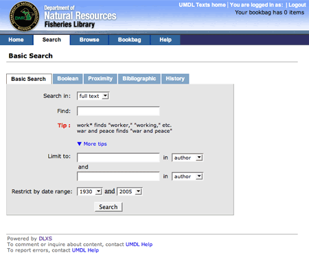

User Interface Layout
From DLXS Documentation
Main Page > Customizing the User Interface > User Interface Layout
Please read the User Interface Overview and User Interface Customization sections if you have not yet.
Contents |
[edit] General layout for TextClass
Figure 1 shows the general layout for TextClass (though Image Class and FindAid Class are roughly similar). The structure is created using HTML tables. Each section has default class values so that style definitions can be applied in the CSS.
 |
| Figure 1: top-level table structure of a typical page in Text Class |
Figure 2 shows the basic search page for the Fisheries Division Library collection. The header graphic is defined in the Collection Manager. Background images, background colors, font styles,and font colors are defined in the CSS. Navigation bar labels, page text header markup (not header text content, e.g., "Basic Search"), instruction text and footer text are hard coded, and thus identical across all collections. All other content is specified per collection by processing instructions.
|  |
| Figure 2: Basic search page for Fisheries Division Library in Text Class |
[edit] Header characteristics
In Text Class, the header of each page template includes the area in the top 75 pixels of the page containing those elements associated with unique collection identity: main collection title, global links, if any, and the main navigation bar. All header and navigation components are built primarily by the navheader.XML, navheader.xsl, and navbarutils.xsl files, which are incorporated into each of the main functional template files. The relationship between a main template file (e.g., reslist.XML) and navheader.xsl is illustrated in Figure 3 below.

|
 [anytemplate].xsl |
| Figure 3 : Template layout showing division between main template content and the navheader . |
[edit] Modifying Look and Feel
The main header portion of the page is compiled from a navheader.xml file and navheader.xsl file. All references to common graphics are hard-coded to the class graphics directory in XSL templates. To include collection specific graphics will require changing an XSL template rule for that collection. Techniques for CSS and header options are detailed in the following sections.
Using Text Class again as an example, templates can utilize two CSS files for
controlling most font and color characteristics: textclass.css and textclass-specific.css.
textclass.css is stored in at the $DLXSROOT/web/t/text/ path and
contains all the default style declarations. textclass-specific.css is optionally created
for each individual collection and stored at the $DLXSROOT/web/c/coll/ path.
Reference paths to both stylesheets are now included as node values within
the DlxsGlobals node to each page ...
<CssLink>/t/text/textclass.css</CssLink><br> <CssLink>/c/collection/textclass-specific.css</CssLink>
..and the link elements to the files are constructed in the htmlhead.xsl stylesheet.
Because textclass-specific.css is referenced after textclass.css, any style declarations that appear in textclass-specific.css will effectively overwrite matching declarations in textclass.css. This is how fonts and background colors are varied for each collection. full text of textclass.css
When creating a local look and feel with textclass-specific.css, you replace those CSS style rules that affect portions of the page header (or any other styles) so that they will override, for that collection, the class level styles. Refer to guide to header css styles for more details on which styles are associated with each element.
[edit] Example 1: Changing color of navigation tabs
If you wanted to change the color of the main navigation tabs, you would start by finding the associated style in textclass.css. Since many interface elements have multiple styles associated with them, Firefox's Firebug can be extremely helpful in pinpointing the exact style definition to use. Below is a screenshot of Firebug in action.
| Figure 4: Finding style definition using Firebug |
So, we can see that textclass.css has a style definition (td.mainnavcell) that includes background color for the main navigation tabs.
td.mainnavcell {
background-color:#F5F5DC;
border-bottom:1px solid #DAD1B2;
padding-left:20px;
padding-right:20px;
}
If all you want to change is the background color, you would just need to add the following style definition your textclass-specific.css file:
td.mainnavcell {
background-color#DEC57B;
}
[edit] Example 2: Change a collection's header image with collection manager
If you want to use a graphic in the header for the collection identification, this can easily be done in Collection Manager.
After you have created your new graphic (recommended size is approximately 500px X 72px), place it in the directory $DLXSROOT/web/c/collid/graphics.
In the Collection Manager, find the primarytitle field. By default this is set to the collection title. To change it to your new graphic, enter the name of your graphic file preceded by "graphic:"graphic:filename.ext. You will also need to update the webdir field by entering the directory path (usually in the form of /c/collid).
| Figure 5: Example of primarytitle field in Collection Manager for the Fisheries Division Library |
Note: the graphic that is set in collmgr can be used in conjunction with a background image via the CSS. The textclass.css file has default background-image styles that are blank images:
td#hdr1 {
background-image:url(/t/text/graphics/hdr-bg1.gif);
}
<p class="unixcommand">
td#hdr2 {
background-image:url(/t/text/graphics/hdr-bg1.gif);
}
The Fisheries Division Library example above has customized the header to include a gradient image in both sides of the header. This was done by overriding the default styles in textclass.css with custom styles in the textclass-specific.css file. Below are the new collection specific styles relating to the header background...
td#hdr1 {
background-image:url(graphics/dnrwaterbg.gif);
}
td#hdr2 {
background-image:url(graphics/dnrwaterbg.gif);
}
[edit] Example 3: Change location of element in XSL
If you want to make simple changes to the location of certain interface elements, this can typically be
done by creating a collection specific XSL file with the desired changes.
For example, if you just wanted to move the bookbag count string to above the other global links, you would need to create a collection
specific version of navheader.xsl.
| Figure 6: Default location of bookbag count and Global links in Fisheries Division Library Collection. |
If you are unsure about which XSL stylesheet to use, see the previous section on Finding the Correct Files. Using Firebug's inspect feature again, you can look to see if there are any associated styles for the elements you want to move. In the Fisheries example, we can see that the table containing the global links has the style: table class="globalLinksTable". Even though we aren't changing the style, this will be useful for finding the bit of corresponding code in the navheader.xsl file.
So, if you search navheader.xsl for "globalLinksTable" you'll find the table with that class and then the next table is the one that contains the bookbag count.
| Figure 7: Default order for global links and book bag count |
Then, you will just need to create a new copy of navheader.xsl and edit it so that the second table with the bookbag string comes first. This new navheader.xsl file will then be placed in the collection's directory $DLXSROOT/web/c/collid/.
| Figure 8: Re-ordered book bag count and global links tables |